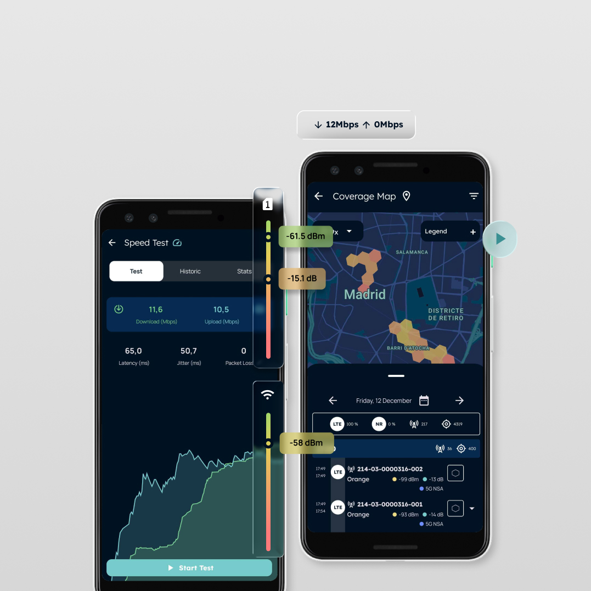
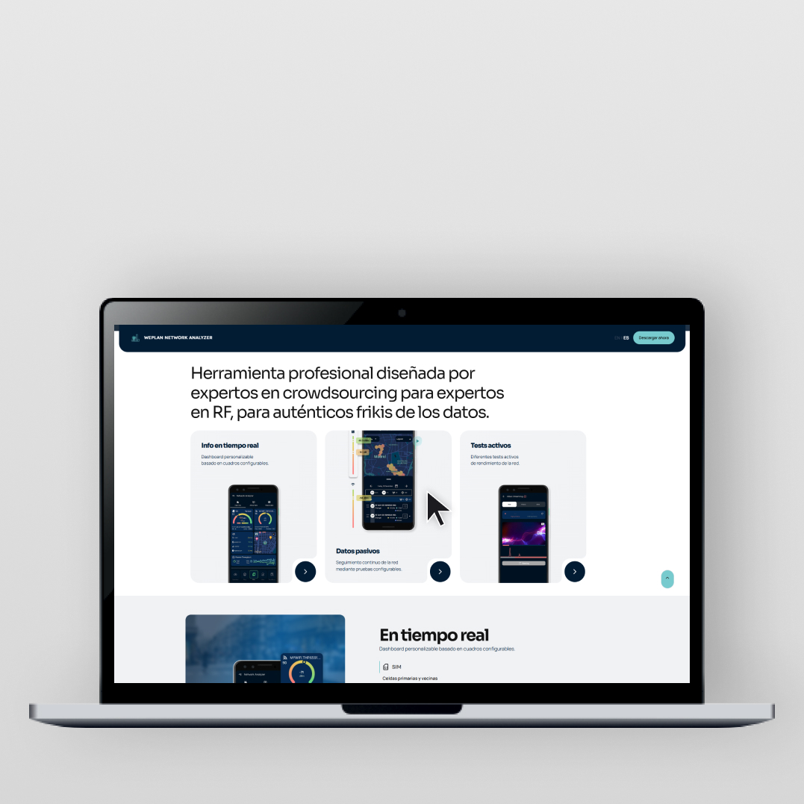
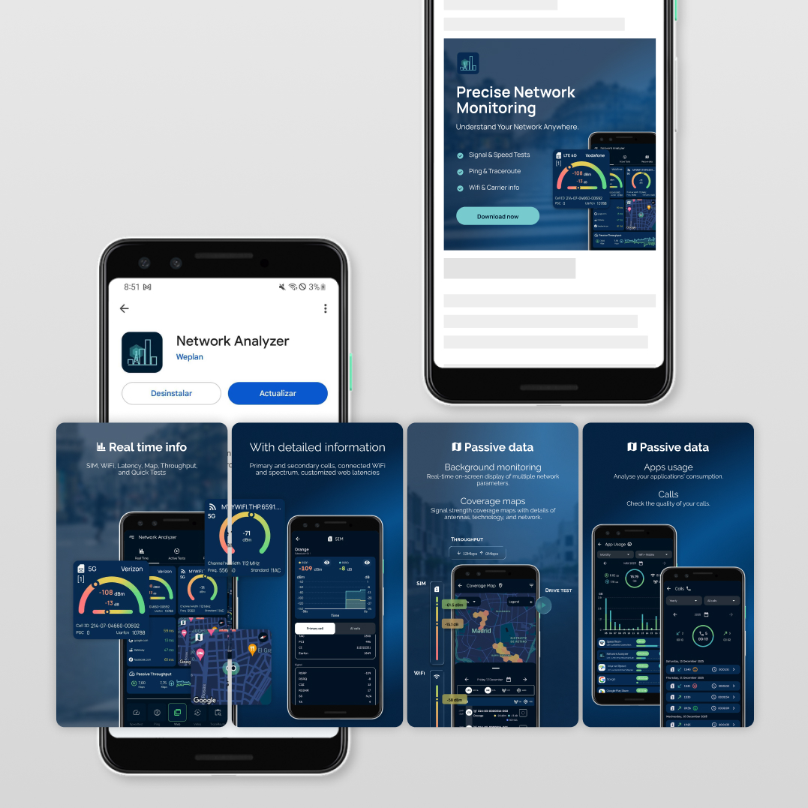

Proyecto UX UI
Network Analyzer
Herramienta profesional diseñada para expertos en RF y expertos en datos, que ofrece mediciones avanzadas en tiempo real para evaluar la calidad y el rendimiento de las redes móviles y WiFi.

Objetivo del proyecto
- ○Optimizar la visualización de datos técnicos en dispositivos móviles.
- ○Garantizar una navegación fluida entre métricas de red complejas.
- ○Reforzar la identidad de marca profesional de Weplan.
- ○Mejorar la usabilidad para técnicos en campo.
UX/UI de la app
Diseño integral de la aplicación para Android, priorizando la legibilidad y la rapidez en la toma de decisiones. Ver en store ↗
- Dashboard de métricas en tiempo real.
- Mapas de cobertura interactivos.
- Gráficos avanzados de señal y latencia.
- Modos claro y oscuro, customizable por el usuario.


Web y presencia digital
Creación de la landing page oficial para la promoción de la herramienta y captación de clientes corporativos. Visitar web ↗
- Diseño responsive orientado a conversión.
- Secciones técnicas explicativas.
Branding y promoción
Desarrollo de piezas gráficas y materiales promocionales para el lanzamiento de Network Analyzer.
- Social Media Kit (LinkedIn, Google Ads).
- Material para ferias y eventos técnicos (flyer).
- Guía de estilo para comunicaciones B2B.

Impacto
Resultados tras el lanzamiento oficial de la plataforma.
10K+
Descargas
4.5
★★★★★
Valoración
401
Reviews
Siguiente proyecto